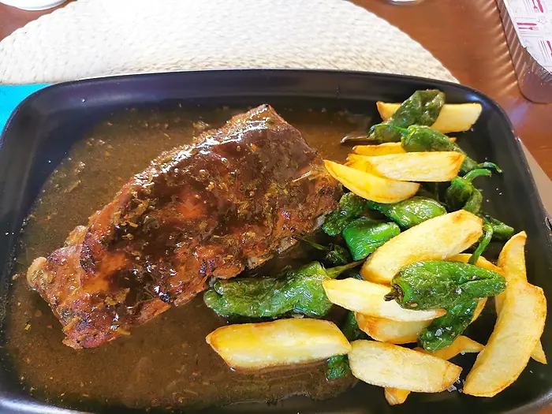
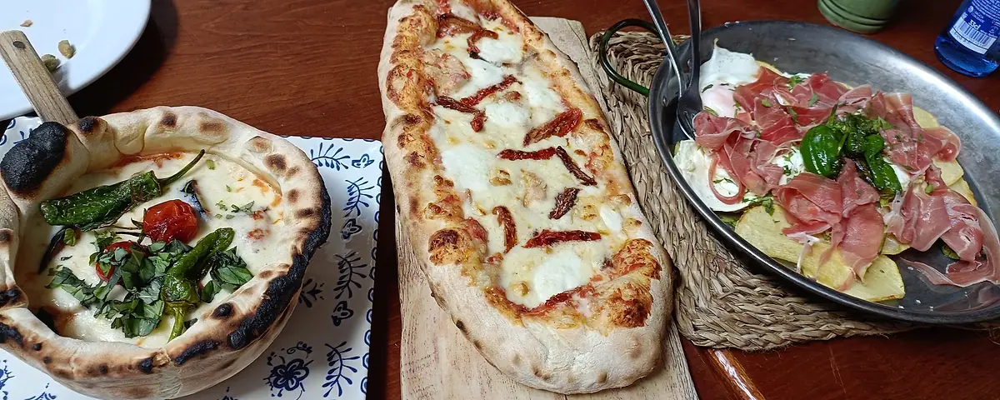

Suplemento · La Gazzetta Italovalenciana Benimeli
Basilico&Spritz Bar-terraza · Piscina municipal de Benimeli
Cerrado por vacaciones
Volvemos pronto, con terraza cubierta
«¡Nos vamos de vacaciones!», así lo contamos en Instagram. Basilico&Spritz vuelve muy pronto a la piscina de Benimeli con carta renovada y terraza cubierta. La fecha, en @basilico_spritz.

La carta
La carta de la temporada pasada
La carta se está renovando para la reapertura. Esta es la que servimos hasta septiembre, como referencia.
Algo para picar

-
Crujiente de pollo10 €
Rebozado en panko con salsa barbacoa y patatas de boniato
-
Gambas al ajillo15 €
Gambas, aceite de oliva, ajos, tomate cherry y pimientos del padrón
-
Albóndigas13 €
Salsa de mostaza, nata vegetal, setas, pimienta y mozzarella
-
Bravas de berenjena15 €
Berenjena, salsa de soja y teriyaki, ajos, cebolla y pimientos
-
Octopus20 €
Pata de pulpo con crema de patatas, huevo a baja temperatura, pimientos del padrón y crujiente de boniato
-
Vitello tonnato13,50 €
Redondo de ternera, salsa Basilico, alcaparras, rúcula y pimienta
-
Alcachofas confitadas13,50 €
Corazón de alcachofas, salsa Basilico, jamón serrano, tomate seco y burrata
-
Que morro10 €
Morro, crema de patatas, huevo poché y pimientos del padrón
-
Calamar a la andaluza12 €
Calamar rebozado en harina de garbanzos, salsa tártara, pimientos del padrón y rúcula
-
Croquetas caseras1,90 €
Precio por unidad. Espinacas, bacalao, boletus y trufa, gamba roja o jamón ibérico
Panes caseros
-
Pan de pueblo4,50 €
Con tomate, alioli y aceitunas
-
Focaccia8,50 €
Jamón serrano, rúcula, burrata y tomate seco
Ensaladas
-
Basilico11 €
Queso semicurado, tomate seco, rúcula, almendras y jamón serrano
-
Benimeli14 €
Queso burrata, tostas de pan con tomate, cebolla morada, pesto, vinagre de Módena y rúcula
Nuestras patatas
-
Patatas llama a los bomberos14,50 €
Con salsa casera picante, pimientos del padrón y alioli
-
Huevos rotos15 €
Jamón serrano, huevos fritos, patatas caseras y pimientos del padrón
-
Patatas a los 4 quesos15 €
Nata vegetal, mozzarella, queso azul y scamorza ahumado
Burgers
-
Basilico17 €
Carne de wagyu, cebolla, tomate, rúcula, cheddar, huevo, salsa de queso, serrano, mayonesa de trufa y patatas fritas
-
Benimeli16 €
Pollo rebozado en panko, huevo, rúcula, tomate seco, queso ahumado, salsa gaucha picante, crujiente de bacón y patatas de boniato
Costillas

-
Costilla de cerdo20 €
Costilla americana a baja temperatura, en salsa barbacoa al whisky, patatas fritas y pimientos del padrón
Postres

-
Un mal día en la playa6,50 €
Helado de fresa, chocolate, coco, vainilla, cucurucho, chocolate caliente, almendra caramelizada y tierra de galleta
-
Torrijas6,50 €
Torrijas y helado de vainilla
-
Tarta de queso6 €
Mini tarta de queso con helado de vainilla, mermelada de higos y crujiente de almendra
-
Tiramisú7 €
De mascarpone y pistacho
Vinos
Botella
Blancos
-
Finca Feroz15 €
D.O. Rueda · Verdejo
-
Sommos15 €
D.O. Somontano · Chardonnay
-
Tharsys City15 €
D.O. Requena · Macabeo
Tintos
-
Tharsys City15 €
D.O. Requena · Bobal
-
Marqués de Atrio15 €
D.O. Rioja · Crianza
-
Olía15 €
D.O. Ribera del Duero · Tempranillo
Rosado
-
Marqués de Atrio15 €
D.O. Rioja · Garnacha
Cava
-
Domino de Requena15 €
D.O. Requena · Brut
Nada en la carta con esa palabra.
Cartelera
Música en directo junto a la piscina
Así sonó septiembre. Los próximos conciertos se anunciarán en Instagram tras la reapertura.
- KomboiantsJazz, pop, rock y blues · 21:00
- Fesols i NapsRock, Aperol Spritz y algo para picar
Dónde
En la piscina de Benimeli
Basilico&SpritzPiscina municipal · Carrer Olivars
03769 Benimeli, Alicante
| Viernes | 19:00–23:00 |
|---|---|
| Sábado | 13:00–16:00 · 20:00–23:00 |
| Domingo | 12:00–16:00 |
| Lunes a jueves | Cerrado |
El nuevo horario se anunciará en Instagram con la reapertura.
Dónde estamos
Piscina municipal de Benimeli
Carrer Olivars · a unos 5 minutos en coche de Beniarbeig
Abierta: la edición principal
Basilico Tavernetta
La original, en Beniarbeig: tres masas de pizza, pasta casera, menú de mediodía y reparto a domicilio.
Ir a la Tavernetta →